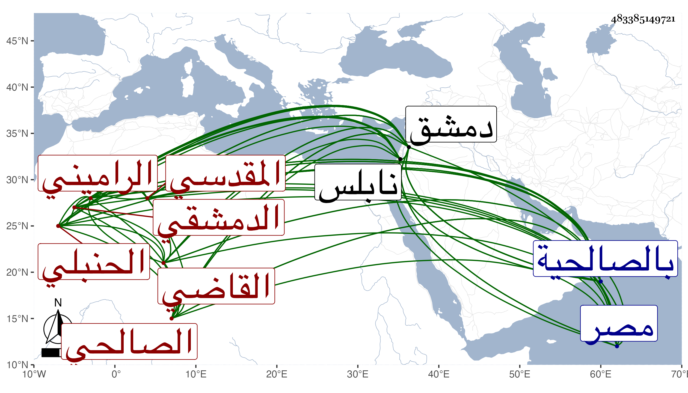

0902Sakhawi.DawLamic.ITO20230111-ara1.EIS1600.483385149721
Biography ID: 483385149721
إبراهيم بن محمد بن عبد الله بن محمد بن مفلح بن محمد بن مفرج بن عبد الله القاضي برهان الدين أبو إسحاق بن الشيخ أكمل الدين أبي عبد الله بن الشرف أبي محمد ابن العلامة صاحب الفروع في المذهب الشمس المقدسي الراميني الأصل ورامين من أعمال نابلس ثم الدمشقي الصالحي الحنبلي الآتي أبوه وولده النجم عمر ويعرف كأسلافه بابن مفلح . ولد في سنة خمس عشرة وثمانمائة بدمشق ونشأ بها فحفظ القرآن وكتبا منها المقنع في المذاهب ومختصر ابن الحاجب الأصلي والشاطبية والرائية وألفية ابن مالك وعرض على جماعة وتلا بالسبع على بعض القراء وأخذ عن العلاء البخاري فنونا في الفقه عن جده وسمع عليه الحديث وكذا أخذ عن آخرين حتى عن فقيه الشافعية التقي بن قاضي شهبة وأذن له وسمع أيضا على ابن ناصر الدين وابن المحب الأعرج وبرع في الفقه وأصوله وانتفع به الفضلاء وكتب على المقنع شرحا في أربعة أجزاء وعمل في الأصول كتابا بل بلغني أنه عمل للحنابلة طبقات وولي قضاء دمشق غير مرة فحمدت سيرته بل وطلب بعد القاضي عز الدين لقضاء مصر فتعلل وقد لقيته بدمشق وغيرها وكان فقيها أصوليا طلقا فصيحا ذا رياسة ووجاهة وشكالة فردا بين رفقائه ومحاسنه كثيرة . مات في ليلة الرابع من شعبان سنة أربع وثمانين بالصالحية وصلى عليه من الغد في جمع حافل شهده النائب وخلق ودفن عند سلفه بالصالحية رحمه الله وإيانا واستقر بعده ابنه المشار إليه . )
